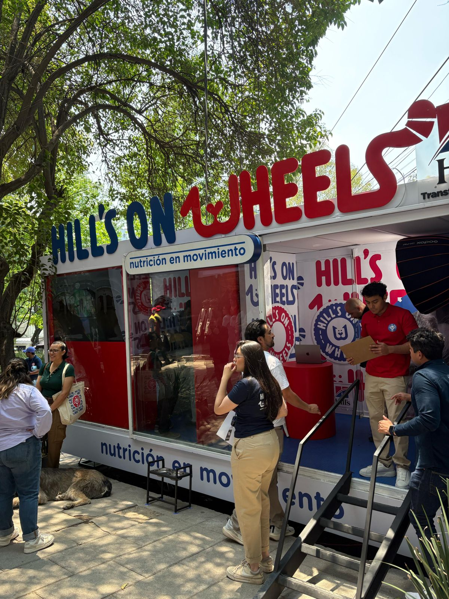

Con el objetivo de acercar la salud y la nutrición a más mascotas, Hill's, pionero en nutrición avanzada y bienestar animal, lanza la iniciativa Hill's on Wheels, un consultorio móvil que recorrerá distintos parques de la Ciudad de México y Zona Metropolitana, ofreciendo chequeos nutricionales gratuitos para perros y gatos. Este evento está diseñado para dar a conocer a los pet parents los beneficios de una nutrición avanzada y personalizada para sus mascotas, según su edad, tamaño, nivel de actividad o condiciones específicas de salud.
En México, más del 73% de la población adulta convive con animales de compañía, según
datos de la Primera Encuesta Nacional de Bienestar Autorreportado (Enbiare, 2021).
Sin embargo, el bienestar de estos fieles amigos no siempre se atiende con el seguimiento
adecuado. De acuerdo con la Association for Pet Obesity Prevention, a nivel mundial,
el 21% de los perros ya presentan sobrepeso a los 6 meses de edad, lo que compromete
su salud desde etapas muy tempranas.
Además, el 59% de los perros y gatos, en general, tienen sobrepeso3, y en la mayoría
de los casos, sus tutores no lo notan. Esta condición puede derivar en problemas
digestivos, articulares o de movilidad, afectando gravemente la calidad de vida
de las mascotas. Por ello, esta iniciativa no solo busca fomentar la prevención,
sino también brindar información para que los tutores puedan tomar decisiones
informadas sobre la alimentación de sus mascotas, eligiendo el alimento más adecuado
para cada etapa y estilo de vida.
Una nutrición basada en ciencia
Hill's ha transformado la vida de millones de mascotas a través de su portafolio de nutrición clínica avanzada, tanto con la línea de Science Diet para las mascotas sanas, apoyándolas en sus diferentes etapas de vida, como con la línea de Prescripción Diet para mascotas que padecen de alguna enfermedad, como puede ser renal, cardiaca, urinaria, entre muchas otras.
Así, Hill's on Wheels será un servicio itinerante que permita a los pet parents conocer, de manera rápida y profesional, el estado de salud y necesidades alimenticias de sus mascotas, así como impulsar una cultura de prevención.
¿Qué incluye la experiencia?
Chequeo gratuito de 15 a 20 minutos
Valoración con veterinarios profesionales con cédula
Evaluación de peso, condición corporal y orientación nutricional personalizada
Activaciones con degustación, obsequios y un par de sorpresas más.
¿Cuándo y dónde?
Primera etapa
Parque de los Venados - 26 y 27 de abril
Parque Naucalli - 3 y 4 de mayo
Parque Alfonso Esparza (Nápoles) - 10 y 11 de mayo
Segunda etapa
Parque de la Bombilla - 17 y 18 de mayo
Parque España - 24 y 25 de mayo
Parque Pilares - 31 de mayo y 1 de junio
Horario
De 9:00 a 17:00 hrs.
¿Quién puede asistir?
La experiencia está abierta a todo público. Solo es necesario acudir con tu mascota;
no se requiere cita previa. El servicio se ofrece por orden de llegada.
Inspirada en la ciencia y la empatía, Hill's busca consolidarse como aliado de los pet parents para garantizar el bienestar integral de sus animales, promoviendo una alimentación adecuada como base de una vida más larga y feliz.